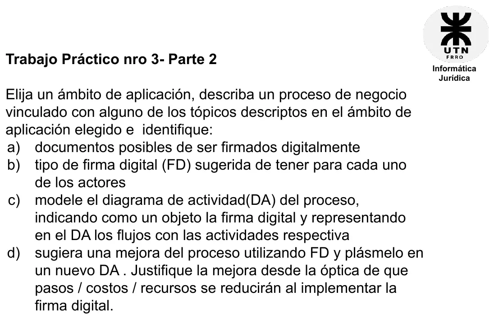

TP 3, parte 2: firma digital en un proceso de negocio (2026)
Eje 2: firma electrónica y digital, 2026
Enunciado


Propuesta de respuesta
Respuesta no verificada. La propuso Luta Studios con inteligencia artificial y ningún docente la revisó. Puede tener errores.
El ámbito elegido es el inmobiliario, que la cátedra nombra entre los usos de la firma digital junto con los contratos de arrendamiento. El proceso es el alquiler de un departamento a través de una inmobiliaria, desde el contrato hasta el recibo de cada mes. Es un ejemplo armado para esta propuesta.
a) Documentos que se pueden firmar digitalmente.
- El contrato de locación.
- El inventario y estado del departamento, que va como anexo.
- La póliza del seguro que pida el contrato.
- El recibo de cada mes.
b) Firma digital para cada actor. Sale de los tipos de certificado y de dónde se guardan.
| Actor | Firma digital | Por qué |
|---|---|---|
| Inmobiliaria | Certificado de persona jurídica, en token | Firma muchos contratos, y la firma remota no permite firma masiva |
| Sistema de recibos de la inmobiliaria | Certificado de aplicaciones, en el sistema que emite los recibos | Firma cada recibo sin que intervenga una persona |
| Locador | Certificado de persona física, con firma remota (PFDR) | Firma pocos PDF, desde el celular y sin comprar un token |
| Locatario | Certificado de persona física, con firma remota (PFDR) | Igual que el locador |
c) El proceso hoy. El contrato se firma en papel en la oficina. La firma digital aparece en un solo lugar, el recibo de cada mes, como objeto que usa la actividad de firmarlo. Tocá el dibujo para verlo en pantalla completa.
d) La mejora. El contrato se hace en PDF y lo firman las tres partes con firma digital, cada una desde donde esté. La inmobiliaria verifica las firmas con el software de verificación, que garantiza la integridad, y guarda el original. Un documento electrónico firmado es original y puede haber más de uno, así que cada parte tiene el suyo. Tocá el dibujo para verlo en pantalla completa.
Lo que se reduce con la firma digital:
- Pasos. Imprimir tres copias, ir a la oficina a firmar y entregar las copias en papel.
- Costos. Papel, impresión, traslados y el tiempo de la oficina dedicado a la firma.
- Recursos. Espacio para archivar papel. Además las tres partes acceden a la vez a los originales.
El contrato también gana seguridad jurídica. Con firma digital la autoría y la integridad se presumen, y el no repudio queda garantizado por la infraestructura PKI. Son los beneficios que nombra la cátedra, junto con la eficiencia, el ahorro de costos, los beneficios medioambientales y poder firmar a cualquier hora y desde cualquier lugar.
Respuesta no verificada. Puede tener errores.
Se armó con Eje 2, secciones Electrónica contra digital, Certificados e infraestructura (tipos de certificado, dónde se almacena y PFDR), Original y copia, Beneficios y Dónde se usa.
Quedó en duda: Esta materia no explica el diagrama de actividad. Se usó la notación UML, con una calle por actor y la firma digital como nodo objeto. La consigna no aclara si el diagrama de c) es el proceso de hoy. Se tomó así, y la mejora va en d). El material no dice dónde se guarda un certificado de aplicaciones. El ámbito, el proceso y los actores son un ejemplo.